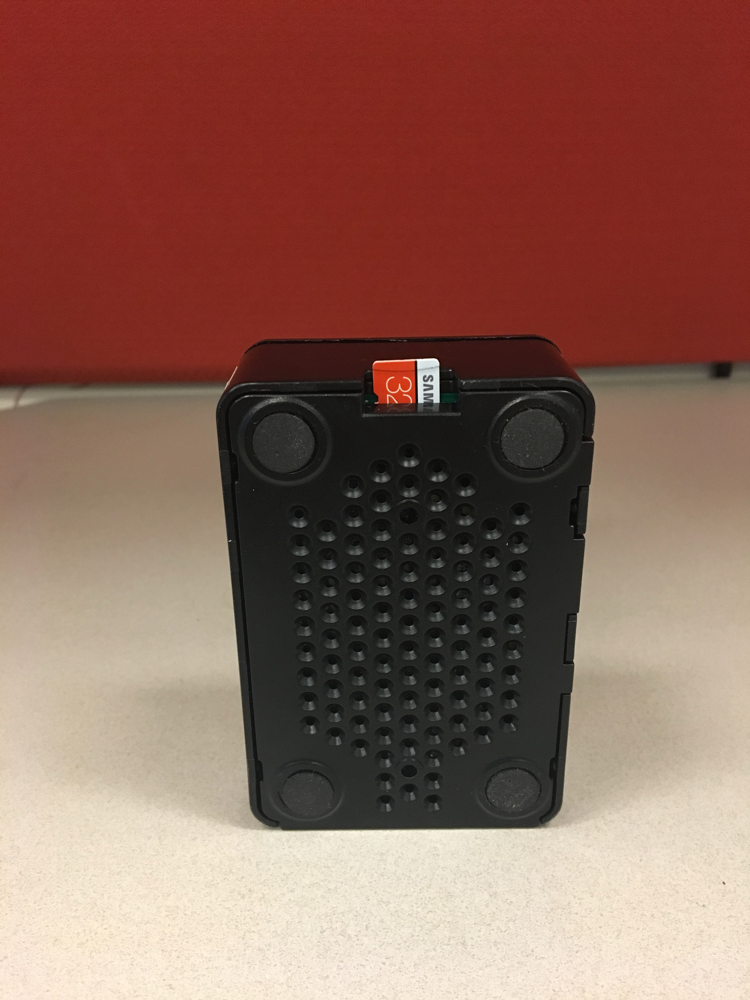

- Home
- Horn Telescope Construction
- Computer Setup
- Observing with your Horn
- Radio Astronomy
- About
- Memos
- FAQ
Telescope construction
A simple radio telescope consists of a collecting element, amplifier, mixer, and digitizer. Here is a drawing of how it all goes together.

Horn and Waveguide
In our Low Frequency Cosmology lab at Arizona State University, we used top of the line software to optimize our telescope horn to observe the 21 cm line.

This image shows our final optimized dimesions for the horn according to highest gain.
We tried many shapes and designs, but found that the parameters listed below worked best for us. As always, we encourage you to test your own design, but for ease in this project you can use the template we provide.
Horn construction
The picture below shows the horn dimensions that will be cut out on the cardboard sheets. Make sure to sketch out your deign with a pencil and follow the saying, “Measure twice, cut once” to ensure your dimensions are as accurate as possible.

Next, we need to line the cut out cardboard pieces with the aluminum foil. We only need the inside of the horn to be covered with foil, since that’s the part where all of the light particles will be focused into. Therefore, only one side of each piece needs to be covered.
Hot Tip #1: Make sure no adhesive or tape is exposed on the foil side because this will bring the horn’s reflectivity down. This can be accomplished by going over any exposed spots with foil tape.
Next we will need to use our hot glue gun to glue the edges of the horn together. Make sure to fold the waveguide edges shown in the schmeatic above so that it creates a box on the bottom of the horn.
Hot Tip #2: Don’t glue the back panel onto the horn quite yet. Set this aside for later to make the process of hooking up the electrical components easier.
Hot Tip #3: You can use any method you’re comfortable with to connect the cardboard pieces. It’s a little easier to have a partner help to ensure stability, but it can be done with just your own steady hand. One option is to let the hot glue set overnight between each panel, but doing all four sides at once works just as well - especially if you have a time constraint.
Now that all the pieces are glued together, we took our aluminum tape and lined the inside edges of the horn with it so that no glue was showing. Again we want a completely reflective and conductive surface so that energy transfer from the photons and electrons can effectively travel to the waveguide and probe.
Below is a photo of what your horn will look like constructed.

Add the Probe
Now that you have a horn that focuses light lets add a pickup to send the energy into a wire.
Probe Materials
For this section you can either buy the pieces individually or in packages online for more convenience. Individual Pieces
- 1: SMA Coaxial Panel Mount Connector with Bulkhead Nut and Solder Cup
- 1: Gold plated locking washer
- 1: 7.5cm by 3.5cm Aluminum plate. Preferably .05” thick. (Soup can lid or scrap metal)
- 1: SMA Male to Female Right Angle 90-Degree Adapter Gold Plated
- 1: Bias-T Enabled LNA/Filter
- 1: 6.3cm Copper wire
- Packages from Online
- Wlaniot SMA Female Connector SMA Coaxial Panel Mount Connector with Bulkhead Nut and Solder Cup Terminal 5pcs
- SMA Connectors
- SMA Right Angle Connectors
- LNA/Filter
- 6.3cm Copper wire
NOTE BENE!: Material availability changes with time and more often then not things can be done better than we’ve done here. Try new materials! Let us know what works better.

Make the Probe
Use a 1/4” drill bit to drill a hole in the middle of the aluminum plate. Our SMA connector is going to fit right into this hole, and the aluminum plate is used to stabilize it Otherwise, the cardboard alone would be too flimsy. Drill a 1/4” hole into one of the wide sides of the waveguide 7cm down from the edge in the center. Next, we will need to solder the copper wire to the solder cup.

Note: remember how we set aside the small back panel piece? We did that to make it easy to reach through that opening of the horn and carry out these next steps.
Connect the probe parts to the inside of the waveguide:
- Remove the gold nut and one of the gold locking washers from the SMA mount connector.
- Put the SMA connector section of the copper wire hook up through the aluminum plate.
-
Place the gold locking washer and gold nut on top of the SMA on the other side of the aluminum plate in that order. Refer to the attached images for visual assistance.


- Push the SMA from the inside through the cardboard hole so the metal plate is on the inside of the horn. Hot Tip #4:Use a pencil or similar instrument to widen the hole slightly after drilling. This will make screwing in the 90 degree connector much easier.
- Use foil tape to secure the metal plate and keep the inside of the horn completely reflective.
- Screw on the male to female 90 degree SMA connector from the outside of the horn.
- Screw on the male to male SMA connector to the 90 degree connector.
Data Capture Computer
A computer is needed to record data from the radio. Here we describe how to make a dedicated raspberry pi setup. You can also use a laptop. We use a pi because it is cheaper and easier to maintain. In these instructions we will cover every step needed when beginning from a bare Pi.
Materials
- Raspberry Pi 4
- Micro SD Card (32GB)
- RTL-SDR
- A computer monitor
- Keyboard
- Ethernet cable
- Radio antenna
- Personal computerRaspberry Pi 4
- Micro SD Card (32GB)
- RTL-SDR
- A computer monitor
- Keyboard
- Ethernet cable
- Radio antenna
- Personal computer
Imaging the Micro SD Card
The Pi runs off a solid state SD card. The easiest way to install the operating system is to use another computer to put the complete OS onto an SD card.
- On a laptop or desktop, install the Pi imager.

- Click on CHOOSE OS and select the first option Raspbery Pi OS (32-bit)

- Click on CHOOSE STORAGE and click on the first option that has the SD card.
- After the writing process is done, safely eject your micro SD card and insert it into your Raspberry Pi. 
Setting up your RPi
To get started, we need to make sure that all our wires are hooked up and ready to go.
- Hook up your Raspberry Pi to your monitor.
- Plug in your ethernet cable.
- Hook up to your keyboard (we used a wireless hook up for ours).
- Plug in your Raspberry Pi into a power source.

Make sure all connections we set up in the beginning of the tutorial are still in place so that our system will start up on the monitor screen. The system will now prompt you to choose your location settings, and to set a username and password. Once this set up process is complete, it will check for updates.
System Updates
The Ubuntu system will now scan for updates. Click Next to update and Restart once it prompts you to.
Computer help!
We will make moderate use of the linux command line terminal. Through the terminal we can do all the usual things we do n a computer like inspect the contents of directories, manage files, and run programs. The terminal itself is a program called Bash (which is a portmanteu of Bourne Again SHell). If this is your first time in the shell, check out our linux shell🐢 help page.
We were all n00bs once! See a bit slang you don’t recognize? Consult our modest compendium of computer vocabulary. Or just, you know, google it!
Install Gnu Radio
GNU Radio is the free open source software that we will be using to help us process our data. Make sure that you have an internet connection for these next steps. We used an ethernet hook up to ensure that we had an internet connection, but you can also hook up to wifi if available. To install gnuradio on Ubuntu, open up your terminal run the following command:
sudo apt install gnuradio-dev gr-osmosdr librtlsdr-dev build-essential git cmake
It will ask you to continue after using a certain amount of disk space.
Type: Y and click enter
This download might take up to 20 mins.